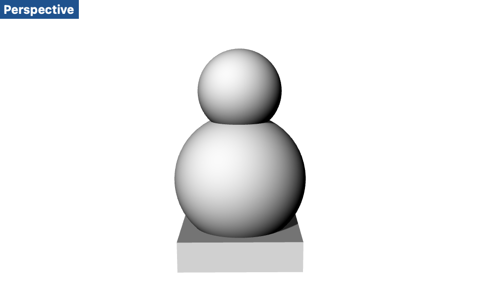
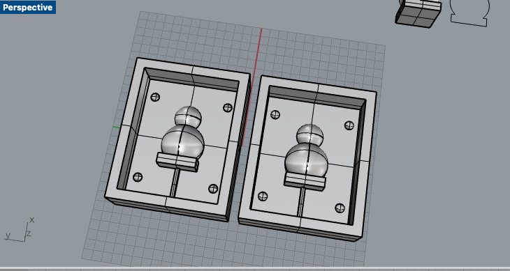

A6: Molding and casting pt 2!
Part 1: Designing the mold
To begin, I designed my mold shape on Rhino. I decided to create a simple shape made from spheres and a box (kind of resembles the robot from the new Star Wars or a snowman). After I created the shape, I split the object by its x-axis and placed them on a box. I made sure there were key components for the mold, such as the registration points and pour holes.
 
Afterwards, I 3d-printed my objects at 90% speed and hight quality to ensure the print would be good.
Part 2: Creating the rubber molds
I went home and started working on creating the rubber molds. For this, I relied on the recommended Oomoo mixture. I poured half of each parts into a cup, thoroughly mixed them, and them placed them into the 3d printed cast. I left them for six hours to ensure they would settle. When I took them out, the quality looked sufficient.


Part 3: Casting my parts
In order to prepare the casts, I taped my rubber molds together with masking tape. I also realized that my pour hole was very tiny, and so I prepared different methods (like cutting a hole in a ziploc bag) to make sure my drystone mix would get in properly. Afterwards, I prepared my mix by using a 8:2 mix:water ratio.


Finally, after just waiting 45 minutes, I was able to take off my rubber molds and my cast appeared. The bottom part didn't fully get the hydrostone mix, but nevertheless, I feel the result came out well. If I have time, I plan to paint and draw on my figures.


Credit
Thank you to Hendranata (MIT) for the inspiration to use tapes!